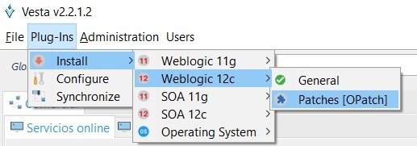
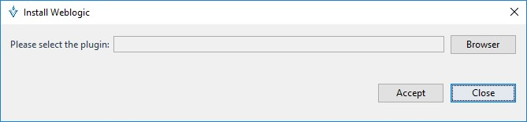
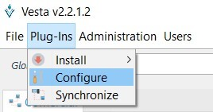
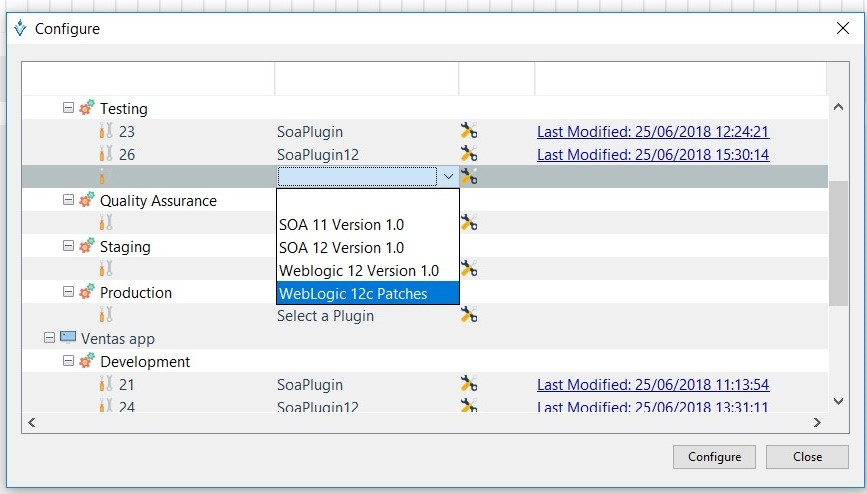
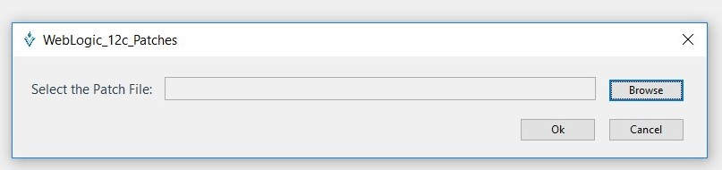
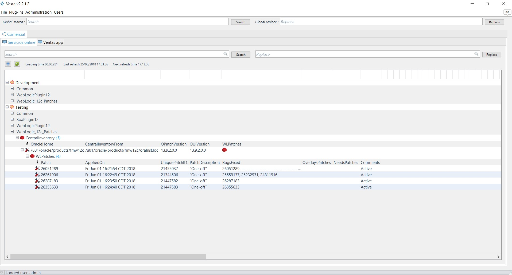
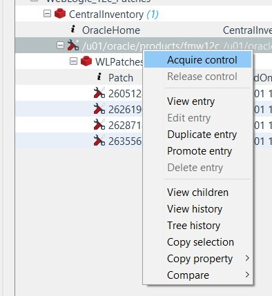

Patches Opatch
Instalación
Al igual que los demás plug-ins, para instalarse ir al menú Plug-ins > Install > WebLogic 11g (o WebLogic 12c) > Patches [OPatch] y seleccionar la ruta del jar del plugin. Nota: No es necesario especificar un Oracle Home
Click Plug-Ins > Install > WebLogic 12c > Patches[OPatch]

En la siguiente pantalla se deberá seleccionar el plug-in a instalar, se solicitará el jar del plugin WebLogic 12cPatches.jar

Browse Este botón permite seleccionar el archivo .zip que contiene los binarios de instalación.
Al finalizar el proceso de instalación será requerido el reinicio de Vesta para la aplicación del plug-in.
Configuracion de plug-on Patches[OPatch]
Para obtener las entradas de configuracion relacionadas a parches de OPatch en un ambiente hay que seleccionar la opcion Configure del menú Plug-ins
Click Plug-Ins > Configure

En la siguiente pantalla se deberá seleccionar la “Aplicación y Ambiente” al cual estará asociado el Plug-in “Patches[OPatch]”. Es importante conocer que una misma “Aplicación y Ambiente” pueden estar asociados a múltiples plug-ins.

A continuación, será solicitado el archivo .patch para la creación de las entradas de configuración.

Browse Este botón permite seleccionar un archivo con extensión .patch para realizar el import de entradas de configuración a Vesta.
Nota: Para generar el archivo .patch debe ir al
/OPatch en el server donde corre su instalación de WebLogic y debe correr el siguiente comando. ./opatch lsinventory > lsinventory.patch (para Linux)
.\opatch lsinventory > lsinventory.patch (para Windows)
El archivo lsinventory.patch debe descargarse al host donde corre Vesta para abrirlo en este paso de la configuración del plugin Patches[OPatch]
Listar entradas “Patches [OPatch]”
Una vez seleccionado el archivo .patch serán cargadas las entradas de configuración en Vesta.
Así podemos tener almacenada la configuración de los parches instalados en el Oracle Home de la instalación de WebLogic.

Opciones sobre entradas

Las siguientes opciones se encuentran descritas en la sección Configuración inicial > Opciones sobre entradas>
- View entry
- Edit entry
- Duplicate entry
- Promote entry
- Delete entry
- View children
- View History
- Tree History
- Copy Selection
- Copy property
- Compare